YouTube 封面点一下就在页面里播放，并从对应的时间点开始；网页类案例点封面打开原页。【看过视频·抽帧+字幕】是我看了 24 张均匀抽帧，并对照带时间码的字幕，不是逐秒看完；没核实的写「待证」。觉得有用就点「喜欢」，有想法写在框里保存。
01 · 程序化运动
让代码或规则自己产生动作，不用每一帧手 K。
噪声晃动 2 个案例
noise / wiggle：给位置、旋转加一点很小、很顺的随机抖动，东西就不会钉死在那里。
噪声晃动
4 Easy Expressions to Enhance Any Animation in After Effects
Ben Marriott（ukramedia 频道） · 2021 【看过视频·抽帧+字幕】
 YouTube · 从 7:30 开始
YouTube · 从 7:30 开始在哪里7:30 起：在调整图层上加 Transform 效果，position 写 wiggle(12,1)，整张画面轻轻抖；4:49 起：Turbulent Displace 的随机种子绑到 time，线条每帧都在微微「沸腾」，像手绘逐帧。
怎么做wiggle(12,1) 的意思是每秒换 12 次方向、每次只挪 1 像素。他特别强调幅度要小，像老胶片过放映机；抖大了就成了果冻。
在 Remotion / Three.js 里怎么做Remotion：@remotion/noise 的 noise2D('cam', frame*0.05, 0)*1.5 加到整个场景的 translate 上，幅度 1 到 2px；Three.js 同样给相机位置加一条噪声。
噪声晃动
The Book of Shaders · 第 11 章 Noise
Patricio Gonzalez Vivo、Jen Lowe · 待证 【看过页面和演示】
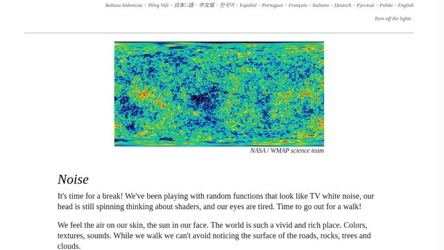
Book of Shaders ↗
在哪里第 11 章整页：开头一张噪声生成的地形图，后面是一组能直接改代码、马上看到结果的实时小窗。
怎么做讲清「随机」和「噪声」的区别：噪声是相邻的值彼此接近的随机，所以动起来是顺滑地飘，不是乱跳。页面里有 Perlin 和 simplex 两种噪声的可改示例。
在 Remotion / Three.js 里怎么做Three.js：给每个零件一条不同 seed 的噪声，pos.y = base + noise(t*0.3 + i)*0.05；想让表面起伏就在顶点着色器里用 simplex 噪声推顶点。
表达式联动 2 个案例
一个元素的动作由另一个元素算出来，改一处，跟着的全部自动变。
表达式联动
4 Easy Expressions…（钟摆那段）
Ben Marriott（ukramedia 频道） · 2021 【看过视频·抽帧+字幕】
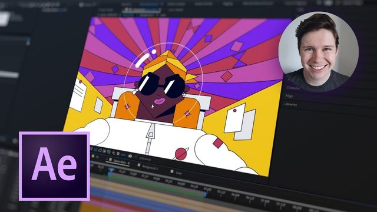
YouTube · 从 9:31 开始在哪里9:31 起：钟摆下面的菱形用 pick whip（拖一根线）把自己的旋转绑到绳子的旋转上；再复制一个菱形挂在下面，就变成一条会甩的尾巴。13:42 起用 index 让每份复制自动多转 11.25°。
怎么做他只给绳子 K 了左右摆，下面每一节都是从上一节算出来的，所以一改绳子，整条链跟着变，还自带层层放大的甩动。
在 Remotion / Three.js 里怎么做Remotion：先算源值 const swing = Math.sin(frame/10)*20，子元素 rotate(swing*1.5)，影子 opacity = interpolate(height, [0,200], [0.5,0.1])；子元素不要单独 K 帧。
表达式联动
Motion Canvas 官方文档 · Signals
Motion Canvas · 待证 【看过页面和演示】
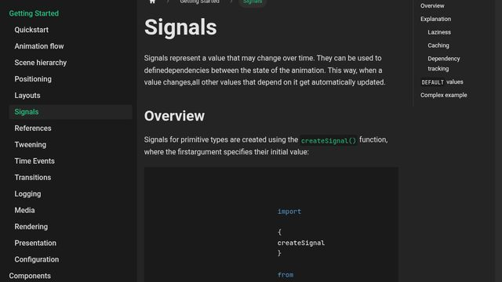
Motion Canvas ↗
在哪里文档「Signals」页：一个值（比如圆的半径）做成信号，其他值写成「从它算出来」的函数，只给源头做动画。
怎么做这就是代码版的 AE 表达式联动：源头一变，依赖它的属性都会自动更新，不用分别去 K。
在 Remotion / Three.js 里怎么做Remotion 没有 signal，但写法一样：每帧先算一个源值，其余属性都用函数从它派生；Three.js 在每帧更新里让 B 的位置、颜色从 A 的数值算出来。
物理模拟，烘焙成帧 2 个案例
让物理引擎去算重力、碰撞、回弹，再把每一帧的结果存下来播放。
物理模拟，烘焙成帧
How to Create a Pixel-to-Voxel Video Drop Effect with Three.js and Rapier
Junichi Kasahara（Codrops） · 2026 【看过页面和演示】
 Codrops ↗
Codrops ↗
在哪里文章开头的演示片段：一段视频被切成像素小方块，方块变成立体小块的那一刻掉下去，散一地。正文第 3 节「Let's get physics」讲掉落。
怎么做每个小方块配一个 Rapier 刚体，平时「睡着」，长成立方体的那一刻才唤醒，给一点随机初速度，剩下的交给重力和碰撞。
在 Remotion / Three.js 里怎么做Remotion 是并行、可乱序渲染的，物理不能边渲染边算：先用固定步长 1/30 秒把整段模拟跑完，把每帧每个方块的位置存成数组，渲染时按 frame 取。
物理模拟，烘焙成帧
When Cells Collide: The Making of an Organic Particle Experiment with Rapier & Three.js
Unseen Studio（Codrops） · 2025 【看过页面和演示】
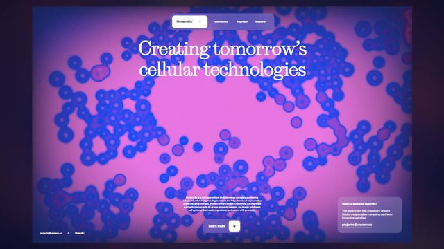
Codrops ↗
在哪里文中演示片段：满屏紫色细胞，一个看不见的球推过去，细胞被挤开，再慢慢合拢。正文「Physics Implementation」一节有建刚体的代码。
怎么做关掉重力，阻尼设 0.7、弹性 0.1，所以细胞不弹跳，只是被推开后黏糊糊地回位。物理世界和画面是分开的，每帧把刚体位置抄给网格。
在 Remotion / Three.js 里怎么做照样先烘焙。参数思路可以直接抄：想要「软、慢、不弹」，就阻尼调大、restitution（弹性）调小。
02 · 编排
很多东西一起动的时候，谁先谁后、谁是主角。
注意力引导 2 个案例
同一时间只让一个东西当主角，其他元素安静、变暗或者先别出来。
注意力引导
12 Principles of Animation（Staging 演出那段）
Alan Becker · 2017 【看过视频·抽帧+字幕】
 YouTube · 从 4:14 开始
YouTube · 从 4:14 开始在哪里4:14 到 6:33「Staging」：4:47 先给一个乱的反例；5:31 讲「让一个动作做完，另一个人再开始」；6:05 把同一场戏重新排一遍做对比。
怎么做同一时间只有一个动作，背景安静，主体轮廓清楚，观众的眼睛就不会找不到重点。
在 Remotion / Three.js 里怎么做给每个时间段指定一个主角：主角正常动，其余元素 opacity 降到 0.35、动作停住；换主角时先压暗旧的，再让新的进场。
注意力引导
iPhone 17 Pro: The most powerful iPhone ever
Apple · 2026 【看过视频·抽帧】
YouTube
在哪里0:00 到 0:47 几乎每个镜头都是黑底上只放一样东西：镜头凸台、侧边铝框、芯片，各配一行字，字和物体轮流出现，不同时抢戏。
怎么做用黑底和单一光源把别的东西全藏起来，一个镜头只讲一个卖点，节奏靠「一镜一句」撑起来。
在 Remotion / Three.js 里怎么做讲解片里一屏只放一个概念加一行字；Remotion 用 <Series> 一段一个主角，上一段的元素先退场再进下一段。
用曲线分配错开 1 个案例
一组东西依次出来时，间隔不是等长的，而是沿一条缓动曲线分配。
用曲线分配错开
GSAP 官方文档 · Staggers（Advanced staggers）
GreenSock · 待证 【看过页面和演示】
 GSAP ↗
GSAP ↗
在哪里文档里「advanced staggers」那部分：stagger 写成一个对象，amount 定整组总共错开多久，ease 决定开始时间怎么分布，页面里有可以直接播放的示例。
怎么做比如 ease 用 power2.in，前几个几乎一起出、后面越拉越开；反过来就是先慢慢冒出来、最后一下涌出。一组东西出场就有了「形状」，不是机械排队。
在 Remotion / Three.js 里怎么做Remotion：const t = Easing.in(Easing.quad)(i/(n-1)); const delay = t*20; 再 spring({frame: frame - delay, fps})。
从一个点向外扩散 2 个案例
错开的顺序按到某一点的距离来排，像水波一样一圈圈散开。
从一个点向外扩散
Pixel-to-Voxel 里的「波纹」那一节
Junichi Kasahara（Codrops） · 2026 【看过页面和演示】
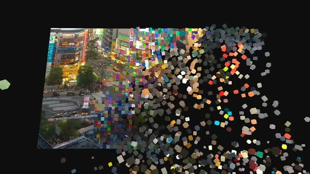
Codrops ↗
在哪里正文第 2 节「Adding Effects with Shaders」：波纹从一个点开始往外走，走到哪里，哪里的扁平小方块就长成立方体；方块长好的时间也决定它什么时候掉落。
怎么做每个方块的开始时间 = 它到起点的距离 × 一个系数，所以离得近的先变、远的后变，整片画面像被一滴水点开。
在 Remotion / Three.js 里怎么做Remotion：const d = Math.hypot(x-cx, y-cy); const delay = d*0.08; 每个格子用 spring({frame: frame - delay, fps})；Three.js 用 InstancedMesh 在着色器里按距离算进度更省。
从一个点向外扩散
GSAP 官方文档 · Staggers（grid + from: "center"）
GreenSock · 待证 【看过页面和演示】
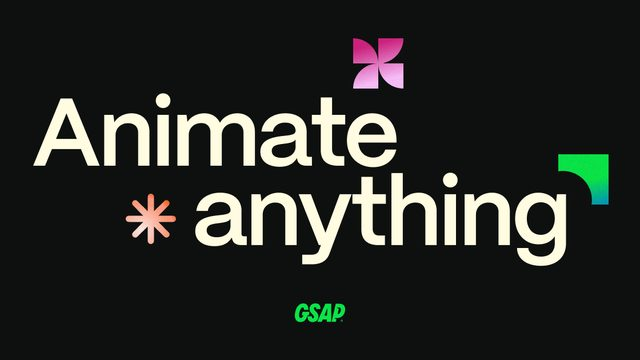
GSAP ↗
在哪里同一页里的网格示例：grid 告诉它这是几行几列，from: "center" 从中心往外，也可以写 "edges"、"random" 或某个格子的序号。
怎么做写一行配置就能得到涟漪式的出场；和上一条的 ease 叠加，还能让波纹越走越慢。
在 Remotion / Three.js 里怎么做Remotion 里手写同样的逻辑：按 i % cols、Math.floor(i / cols) 求出格子坐标，再用上一条的距离公式。
03 · 形状和空间
形状本身在变，或者在平面里做出空间感。
形变（morph） 2 个案例
一个图形平滑地变成另一个图形。
形变（morph）
Quick & Easy After Effects Shape Morph Tutorial
Ben Marriott · 2019 【看过视频·抽帧+字幕】
在哪里三角形变成方块：0:30 到 1:06 先加蓄力和冲过头；3:17 到 3:44 把方块的起点剪在运动最快的那几帧；3:57 起再用路径关键帧把切换点捏圆，做出拖尾感。
怎么做他的诀窍：形变看起来好不好，主要看移动本身。换形状放在最快的那两帧，观众几乎看不到切换，再在切换点加一点路径变形就够了。
在 Remotion / Three.js 里怎么做Remotion：形状 A 和 B 在同一个位移动画里，在速度峰值那一帧切换，配 interpolatePath() 做 2 到 4 帧的过渡（@remotion/paths）。
形变（morph）
Flubber（形状插值库）演示
Noah Veltman · 待证 【看过页面和演示】
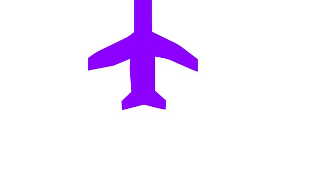
GitHub ↗
在哪里basic-svg 演示页：一个图形在几种完全不同的形状之间平滑地来回变（打开时是一架飞机）。演示页：veltman.github.io/flubber/demos/basic-svg.html
怎么做两个形状点数不一样时，它会自动补点、对齐起点，再一个点一个点插值，所以不会扭成一团。
在 Remotion / Three.js 里怎么做Remotion 先试 @remotion/paths 的 interpolatePath(progress, a, b)；两个形状差太多时，用 Flubber 的 interpolate(a, b) 生成函数，再把 progress 喂进去。
遮罩揭示 2 个案例
用一个形状、文字或纹理当窗口，把内容一点点露出来，比淡入高级。
遮罩揭示
Why YOU Need Mattes in After Effects
Ben Marriott · 2022 【看过视频·抽帧+字幕】
在哪里0:21 起讲 alpha matte（按形状露）；1:42 反向遮罩；1:46 用文字当遮罩盖在视频上；1:56 luma matte（按亮度决定露多少）；后半段用纹理做揭示。
怎么做遮罩层本身不显示，只决定下面那层哪里看得见。遮罩的形状一动，内容就像从窗口里被揭开。
在 Remotion / Three.js 里怎么做Remotion：clipPath: inset(0 ${100-p}% 0 0) 或 circle(${r}% at 50% 50%)，p 用 ease-out 推；纹理揭示用 maskImage 配一张灰度图。Three.js 在着色器里用 step(progress, mask)。
遮罩揭示
WebGL Shader Techniques for Dynamic Image Transitions
Arlind Aliu（Codrops） · 2025 【看过页面和演示】
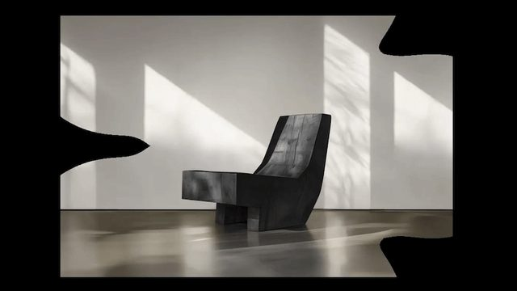
Codrops ↗
在哪里文中演示片段：黑底上几团会扭动的圆斑长大、融在一起，把一张椅子的照片露出来，然后再缩回去。
怎么做用数学画几个圆（距离场），边缘叠正弦波让它们抖动，再用 smooth min 把几团柔和地融成一团；圆斑里面显示图片，外面是黑的。
在 Remotion / Three.js 里怎么做Three.js：全屏平面加 ShaderMaterial，uniform uTime 由 Remotion 的 frame / fps 驱动；放进 @remotion/three 的 <ThreeCanvas> 渲染。
2.5D 视差 2 个案例
把平面图层放在不同深度，镜头一动，近的移得快、远的移得慢。
2.5D 视差
The Kid Stays in the Picture 预告片
影片 2002 年；YouTube 上传者 Jason Stewart（非官方频道） · 2002 【看过视频·抽帧+字幕】
YouTube · 从 0:20 开始
在哪里约 0:21 到 0:23 泳池那张老照片：前景的男人和后面泳池里的人被拆成两层，推近时前景放大得比背景快。其他照片段落的分层时间点待证。
怎么做这部纪录片几乎只有老照片，于是把照片抠成前、中、后几层，补上被挡住的背景，再拉开距离让镜头慢推。这招因此被叫做「Kid Stays in the Picture 效果」。
在 Remotion / Three.js 里怎么做Remotion：每层 translateX = camX / depth、scale = 1 + push / depth；Three.js 把几张平面放在不同的 z 上，用 PerspectiveCamera 慢慢推。
2.5D 视差
Create a 3D Scene from a Single Photo in After Effects
MDMZ · 2021 【看过视频·抽帧+字幕】
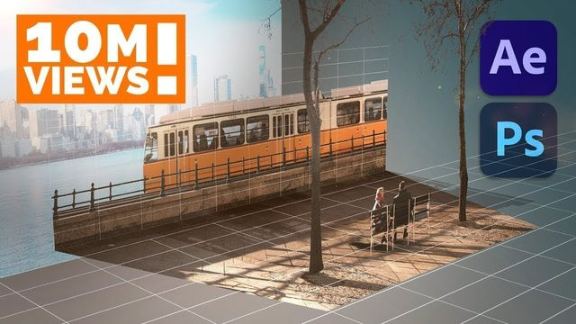
YouTube · 从 14:02 开始在哪里0:24 起在 Photoshop 里一层层抠图、补背景；14:02 进 AE 打开 3D 图层，14:40 建 50mm 摄像机；15:30 起把天际线这些图层往远处推。
怎么做难的是补背景：前景抠走后，后面那块要补画完整，镜头一动才不会露洞。推远的层要放大补偿，看起来大小不变，动起来才有深度差。
在 Remotion / Three.js 里怎么做鱼知道的讲解图可以照做：素材分 3 到 4 层导出 PNG，在 Three.js 里放成平面，镜头只做很慢的推和平移。
四元数插值（slerp） 3 个案例
3D 物体从一个朝向转到另一个朝向，用四元数插值，不翻跟头、不绕远路。
四元数插值（slerp）
Quaternions and 3d rotation, explained interactively
3Blue1Brown（配合 Ben Eater 的可交互课） · 2018 【看过视频·抽帧+字幕】
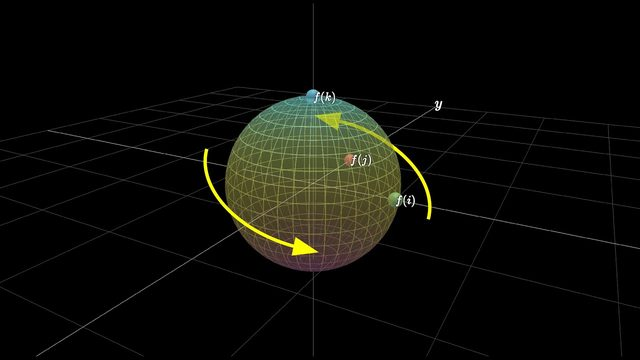
YouTube · 从 2:05 开始在哪里2:11 到 2:55：先讲欧拉角的两个坑：万向锁（两根轴转到重合，少了一个方向），以及两个朝向之间插值会出现歧义；接着讲四元数能干净地在两个朝向之间过渡。可交互课在 eater.net/quaternions。
怎么做欧拉角是「先绕 X、再绕 Y、再绕 Z」，三个角分开插值，中间姿态会很怪。四元数把整个朝向当成一个整体来插值。
在 Remotion / Three.js 里怎么做Three.js：mesh.quaternion.slerpQuaternions(qA, qB, t)，t 用 Remotion 的 interpolate(frame, [0,30], [0,1], {easing: Easing.inOut(Easing.cubic)})。
四元数插值（slerp）
Quaternions - Freya Holmér | NGJ2025
Freya Holmér（Nordic Game Jam 演讲） · 2025 【看过视频·抽帧+字幕】
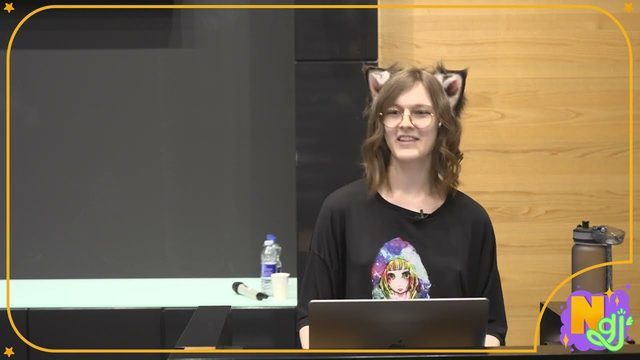
YouTube · 从 45:17 开始在哪里45:17 起讲万向锁；57:12 起总结：欧拉角适合给人在界面里输入，四元数最擅长组合旋转和插值。
怎么做一小时的游戏开发者演讲，画面全是她自己做的动态图解。只想看结论就直接看最后五分钟。
在 Remotion / Three.js 里怎么做规则：界面上用角度给人调，内部一律转成四元数再插值；Three.js 里 new Quaternion().setFromEuler(e)。
四元数插值（slerp）
three.js 官方示例 · math / orientation transform
three.js · 待证 【看过页面和演示】
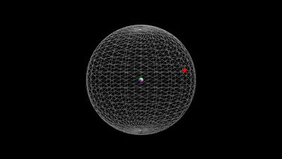
three.js ↗
在哪里一个小锥体在一颗网格球中间，转向球面上随机出现的红色目标点，转得匀速，不会突然翻转。
怎么做源码里每帧用 quaternion.rotateTowards(目标, 速度×时间) 朝目标转一小步，对准后再随机换一个目标；面板上还能切到 lookAt（瞬间对准）做对比。源码很短。
在 Remotion / Three.js 里怎么做在 Remotion 里不能逐帧累积状态，所以换成 slerpQuaternions(起点, 目标, t)，t 由 frame 算出。
04 · 质感
动起来以后看着「贵」：节奏、帧率、转场和光。
按拍子动 2 个案例
先定 BPM，把关键动作卡在拍点上。
按拍子动
3 Techniques To Syncing Motion Graphics To Music
Josh Noel（SonduckFilm） · 2018 【看过视频·抽帧+字幕】
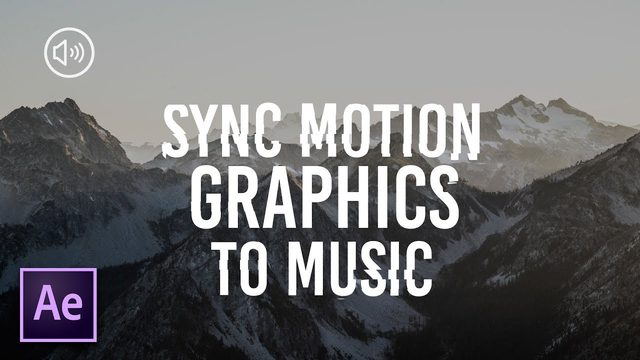
YouTube · 从 0:51 开始在哪里0:51 起：把音轨波形展开，按鼓点打标记；1:20 到 1:49 每个词的出现对齐到一拍；4:33 到 5:02 在拍点上做缩放关键帧；6:18 讲另一种打标记的方法。
怎么做先听、先打点，再动画。每个动作的起点落在拍点上，缓动放在两拍之间，画面就像跟着音乐呼吸。
在 Remotion / Three.js 里怎么做Remotion：const beat = fps*60/bpm（120 BPM、30fps 时是 15 帧），所有 <Sequence from> 和时长取 beat 的倍数；想要随响度脉动，用 @remotion/media-utils 的 visualizeAudio()。
按拍子动
Product Animation in Blender: Phone（最后 color swaps 段）
Derek Elliott · 2019 【看过视频·只看了相关段落的抽帧和字幕】
 YouTube · 从 65:51 开始
YouTube · 从 65:51 开始在哪里65:51 起：整条 20 秒、30fps，最后一段换色的镜头运动和换色全按帧号对着音轨做，他提到这段从第 409 帧附近开始。
怎么做产品片也照样踩拍：先把音轨放进时间线，找到重音的帧号，再把镜头动作和换色的关键帧放在那几帧上。
在 Remotion / Three.js 里怎么做Three.js 场景放进 <ThreeCanvas>，颜色和镜头的关键帧写成帧号数组，对齐上面算出的 beat。
一拍二（on twos） 2 个案例
每两帧才换一次姿势，故意做出手绘和定格的味道。
一拍二（on twos）
How Animators Created the Spider-Verse
WIRED（主创讲解） · 2019 【看过视频·抽帧+字幕】
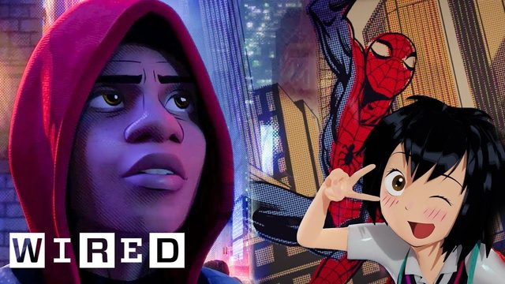
YouTube · 从 7:11 开始在哪里7:11 到 8:15：主创讲为什么用 on twos，暂停慢放能看到 Miles 每两帧才换一个姿势，而镜头几乎全是每帧都动（on ones）；7:48 森林那场 Miles、Peter 和镜头时而同步时而错开。0:45 起讲刻意不用运动模糊和失焦。
怎么做角色在 twos、镜头在 ones，画面又脆又清楚，随便停在哪一帧都像一格漫画。Miles 还没当好英雄时多用 twos，表现他的笨拙。
在 Remotion / Three.js 里怎么做Remotion：const f = Math.floor(frame/2)*2; 角色动作用 f 算，镜头和背景仍用 frame；Three.js 同理，把角色动画的时间取整。
一拍二（on twos）
How 'Spider-Man: Into The Spider-Verse' Was Animated
Insider · 2019 【看过视频·抽帧+字幕】
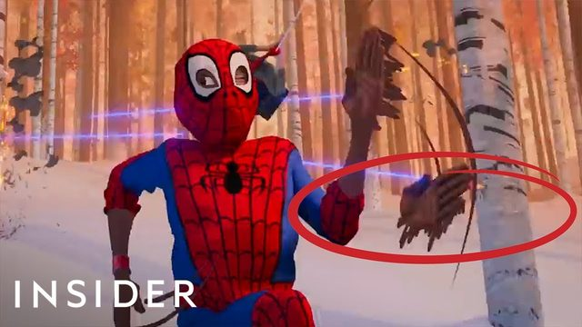
YouTube · 从 1:58 开始在哪里1:58 到 2:45：画面直接打字标出 ON ONES / ON TWOS 做对比，笨拙的 Miles 用 twos，熟练的 Peter 用 ones；3:04 到 3:48 讲用 smear（拖影帧）代替运动模糊。
怎么做帧率被当成表演工具：同一个镜头里不同角色可以用不同帧率。快动作那一帧画出好几只手，代替模糊。
在 Remotion / Three.js 里怎么做想要定格味的讲解动画，可以只让图标和角色走 twos，字幕和镜头保持 ones，免得字发抖。
着色器转场 2 个案例
用 shader 做溶解、扭曲、拉伸、像素化的切换。
着色器转场
Creative WebGL Image Transitions
Yuri Artiukh（Codrops） · 2019 【看过页面和演示】
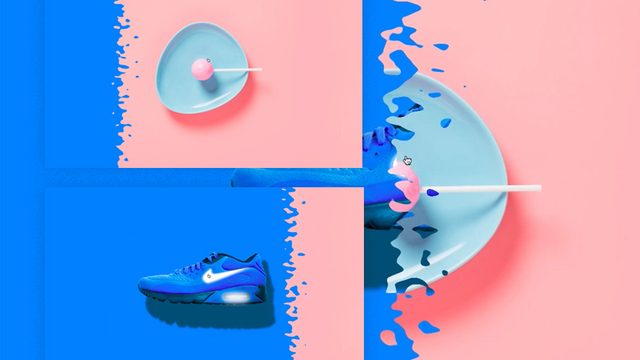
Codrops ↗
在哪里文中演示片段：蓝色球鞋被横向拉成一条条再变成红色球鞋。另有可点击切换 8 种效果的演示页：tympanus.net/Development/webGLImageTransitions/
怎么做平面上铺两张图，shader 里只有一个 progress 从 0 走到 1；改 UV（图片的取样坐标）让图拉伸、重复、错位，同时把两张图混合。
在 Remotion / Three.js 里怎么做@remotion/three 的 <ThreeCanvas> 里放一个全屏平面，ShaderMaterial 的 progress = interpolate(frame, [0,20], [0,1], {easing})。
着色器转场
GL Transitions
开源社区（gl-transitions.com） · 待证 【看过页面和演示】
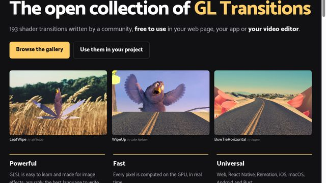
GL Transitions ↗
在哪里首页画廊：很多开源转场，每个就是一小段 GLSL 函数，可以在在线编辑器里改参数实时预览；比如 displacement 那个就是改编自 Codrops 的扭曲转场。
怎么做所有转场都是同一个接口：给两张图和一个 progress，返回这一像素的颜色。所以找到喜欢的，直接抄函数。
在 Remotion / Three.js 里怎么做把 gl-transitions 的 transition(uv) 函数贴进自己的 ShaderMaterial，两张贴图用前后两段视频的帧。
光和材质动画 2 个案例
动的不是物体，而是光扫过、反光滑过表面。
光和材质动画
iPhone 17 Pro: The most powerful iPhone ever（开头几秒）
Apple · 2026 【看过视频·抽帧】
 YouTube
YouTube在哪里0:00 到 0:03 镜头凸台从全黑里被一道光慢慢打亮，橙色机身一点点显形；0:04 到 0:07 侧面铝框上一道高光顺着边走。
怎么做物体几乎不动，是光在动：一盏又长又软的灯慢慢扫过金属，反光沿着倒角滑动，质感全靠这一道高光。具体打光方法 Apple 没公开，待证。
在 Remotion / Three.js 里怎么做Three.js：MeshPhysicalMaterial({metalness:1, roughness:0.25, clearcoat:1}) 加一盏细长的 RectAreaLight，按 frame 平移它；2D 版在 Remotion 里叠一条斜的白色渐变，mixBlendMode: 'screen'，横向扫过。
光和材质动画
Product Animation in Blender: Phone（打光段）
Derek Elliott · 2019 【看过视频·只看了相关段落的抽帧和字幕】
YouTube · 从 65:11 开始
在哪里65:11 到 65:37：加一盏灯给手机底部一点高光，然后让反射在机身上滑过去，logo 被照亮，镜头玻璃里也有反光。
怎么做在 Blender 里做产品片的完整流程录屏，打光那段说明「反光在动」比「物体在动」更显质感。
在 Remotion / Three.js 里怎么做Blender 做好后可以导出 glTF 进 Three.js，光的移动改成在代码里按帧算。
05 · 基础层补课
上一轮讲过的几个基础原则，各找一个讲得清楚的例子。
跟随和重叠 1 个案例
主体停了，附属的部分晚几帧才停。
跟随和重叠
Animation 101: Follow-Through in After Effects
School of Motion · 2020 【看过视频·抽帧+字幕】
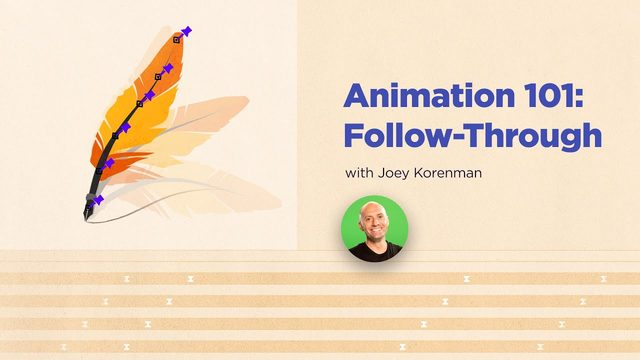
YouTube · 从 8:05 开始在哪里8:05 到 8:31：羽毛从根到尖每一节的旋转关键帧本来是对齐的，他把每一节依次往后挪 1 帧，羽毛立刻变软。Alan Becker 那条的 9:13 到 11:02 也是这个原则。
怎么做不用重新 K 帧，只是把同一套动作在每一节上错开一帧，就从「一块板」变成「会甩的羽毛」。
在 Remotion / Three.js 里怎么做Remotion：同一个 spring，每一节用 frame - i*1；末端再把 damping 调小一点，多晃一下。
蓄力（anticipation） 1 个案例
动之前先往反方向收一下。
蓄力（anticipation）
12 Principles of Animation（Anticipation 那段）
Alan Becker · 2017 【看过视频·抽帧+字幕】
 YouTube · 从 2:06 开始
YouTube · 从 2:06 开始在哪里2:06 到 4:14：跳之前先蹲、出拳前先往后拉；2:27 有不蓄力的反例；3:45 讲可以有好几层蓄力。Ben Marriott 的形变教程 0:30 也在三角形出发前先往左挪一点。
怎么做蓄力有两个用处：让动作有力气，也提前告诉观众「要往这边看了」。
在 Remotion / Three.js 里怎么做Remotion：interpolate(frame, [0, 6, 20], [0, -12, 200], {easing: Easing.inOut(Easing.cubic)})，先往反方向 12px，再冲出去。
转场时速度接上 2 个案例
上一个镜头出场的方向和速度，下一个镜头进场时接着用。
转场时速度接上
This Animation Technique Works Every Time（match cut）
Ben Marriott · 2022 【看过视频·抽帧+字幕】
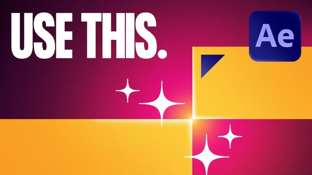
YouTube · 从 2:29 开始在哪里2:29 到 2:46：缩放、位移、旋转都能做 match cut，原则是「一个运动从上一个场景带到下一个场景」，速度不必完全一样；之后用他自己讲澳洲盒装酒的片子做示范。
怎么做切的那一刻运动没有断，观众的眼睛顺着动作滑进新画面，就感觉不到硬切。
在 Remotion / Three.js 里怎么做出场用 Easing.in（越来越快）、进场用 Easing.out（从快到停），两段在切点的速度接近；方向保持一致。
转场时速度接上
After Effects Smooth Transitions - Animation Tutorial pt. 1
Ben Marriott · 2019 【看过视频·抽帧+字幕】
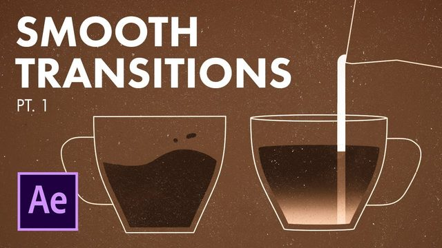
YouTube · 从 4:00 开始在哪里整条只拆咖啡豆变杯子这 1 秒：4:09 看曲线，前半段很长的 ease out、后半段很快的 ease in；6:43 讲在运动最快、视线被带走的那几帧把杯柄藏掉。
怎么做把要换的东西藏在最快的那一下里，前后的缓动负责让人看清起点和终点。
在 Remotion / Three.js 里怎么做在曲线峰值那 2 到 3 帧里换素材、换形状；Remotion 里就是在那几帧切 <Sequence>。
弧线运动 1 个案例
从 A 到 B 走一条弧，不走直线。
弧线运动
12 Principles of Animation（Arcs 那段）
Alan Becker · 2017 【看过视频·抽帧+字幕】
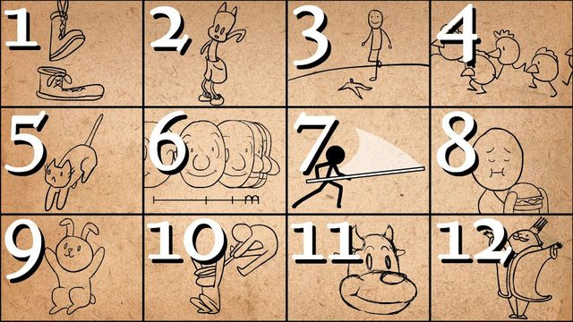
YouTube · 从 12:56 开始在哪里12:56 到 14:37：13:22 讲重力带来的慢进慢出，画面上是 x、y 两条曲线分开画（13:30 左右那张值—时间图）；14:24 讲动作太快时用拖影来画弧。
怎么做x 方向匀速、y 方向带缓动，合起来自然就是一条抛物线，不用手画路径。
在 Remotion / Three.js 里怎么做Remotion：x 用 Easing.linear，y 用 Easing.out(Easing.quad) 分别 interpolate；要走指定路线就用 @remotion/paths 的 getPointAtLength()。
运动模糊 1 个案例
动得快的时候带一点模糊或拖影，看起来有速度和重量。
运动模糊
Remotion 官方文档 · Motion blur
Remotion · 待证 【看过页面和演示】
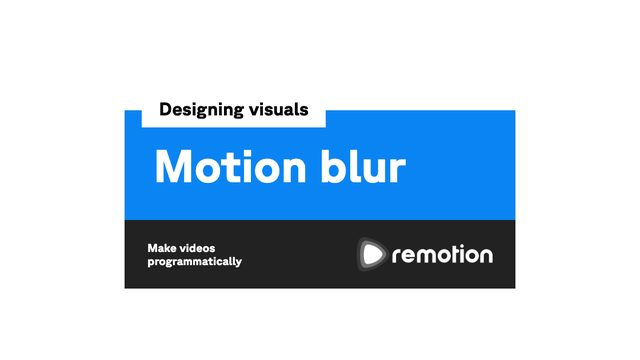
Remotion ↗
在哪里文档页：说明在 Remotion 里做运动模糊，就是把同一帧前后的画面复制几份叠起来，官方包是 @remotion/motion-blur。
怎么做对照看 Spider-Verse：他们故意不用运动模糊、改用拖影帧（见上面 Insider 那条 3:04）。要「真实」就加模糊，要「漫画感」就用拖影。
在 Remotion / Three.js 里怎么做@remotion/motion-blur 里的 <CameraMotionBlur> 包住快速运动的部分，samples 从 5 起试；Three.js 可以用后期处理加速度模糊。